Module 1: Conditionals
Objectives
By the end of this module you will be able to:
- Evaluate Boolean (pronounced: BOO-lee-unn) expressions.
- Construct Boolean expressions from English descriptions.
- Mentally execute (trace) code with conditionals: that is: if, if-else, and if-multi-else statements.
- Write and debug code with conditionals.
- Write and debug code with conditionals inside loops.
- Identify new syntactic elements related to the above.
1.0 A simple example
Consider this program:
x = 5
y = 4
if x > y:
print('Hey, x is bigger')
print("OK, we're done")Let’s explain:
- First, observe: 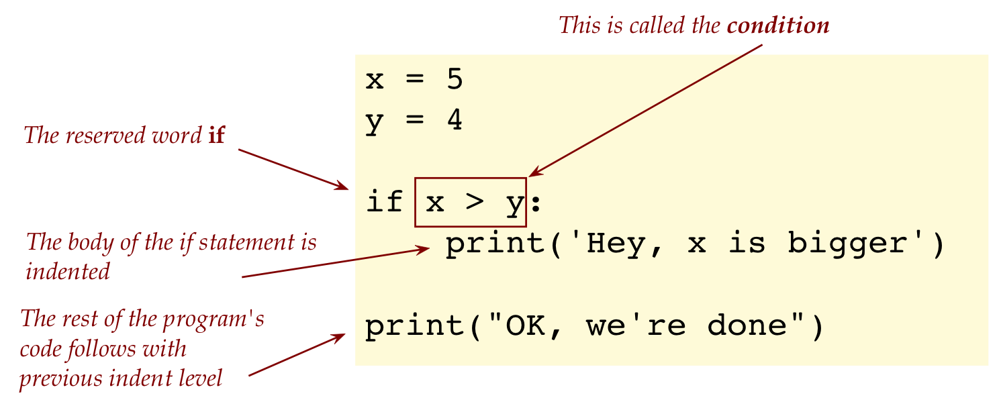
- Now, at the moment the if-statement executes, the condition is evaluated: 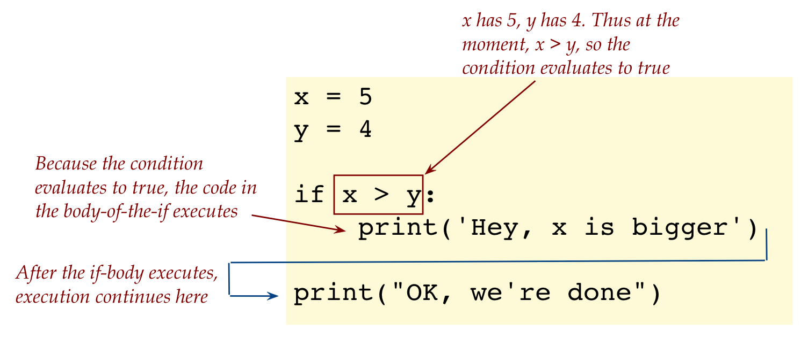 If the condition is true then the code that’s indented below the if-statement executes.
- Consider what happens when y is 6: 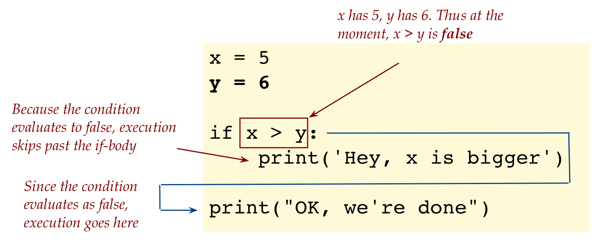
1.1 if-else
Think of else as if’s occasional partner.
Consider this example:
x = 5
y = 4
if x > y:
print('Hey, x is bigger')
else:
print('Who said x is bigger?')
print('In fact, y is bigger')
print("OK, we're done")Let’s point out:
- When x is indeed larger than y, the code in the if-body executes: 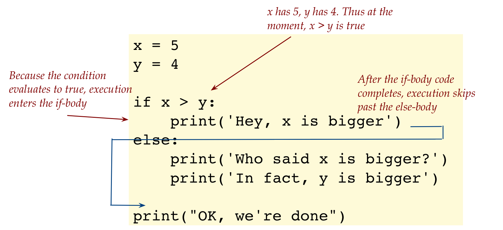
- When the if-condition evaluates to false: 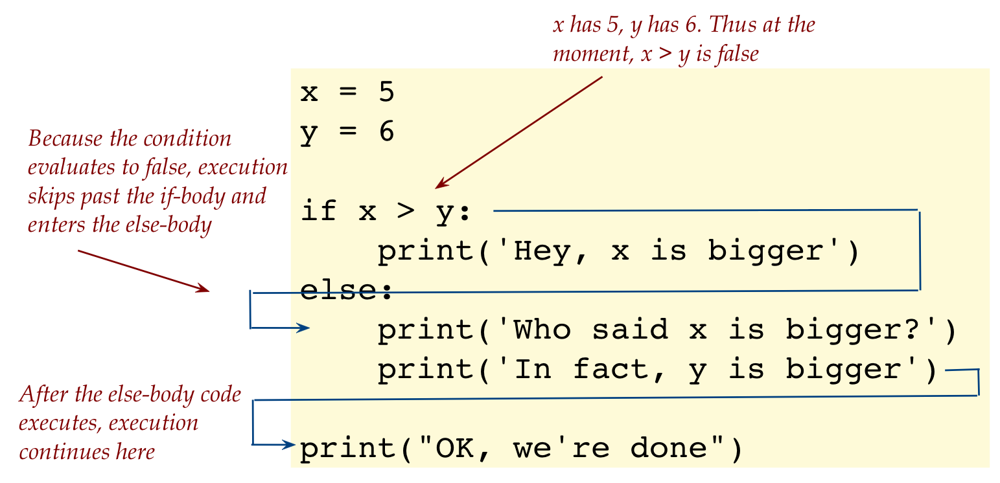
- What happens when x is 5 and y is 5? 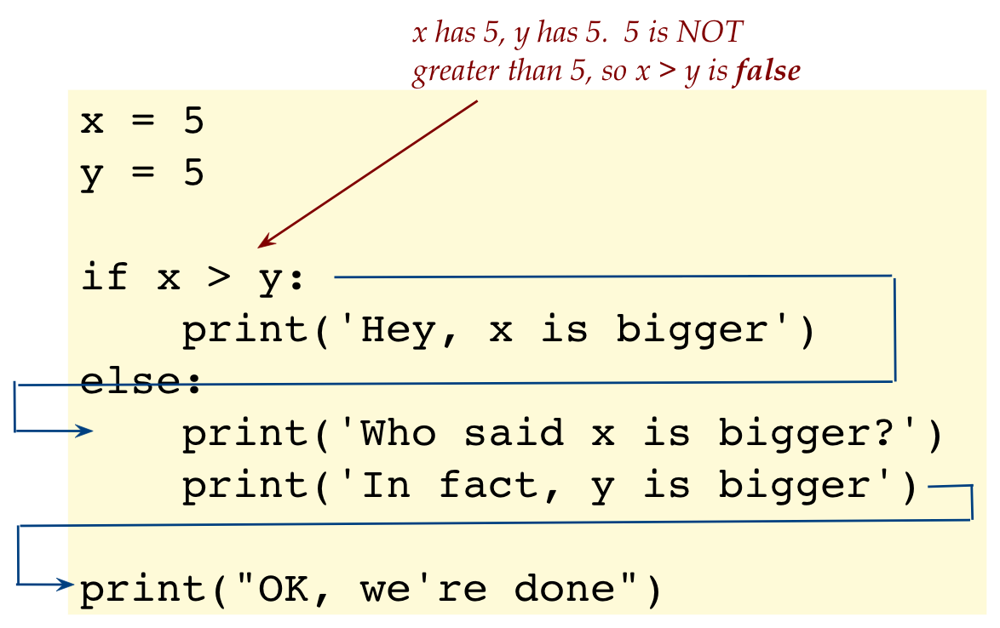
Because some of these arrows might be difficult to follow, let’s emphasize some blocks (lines) of code:
- First consider when x is larger than y: 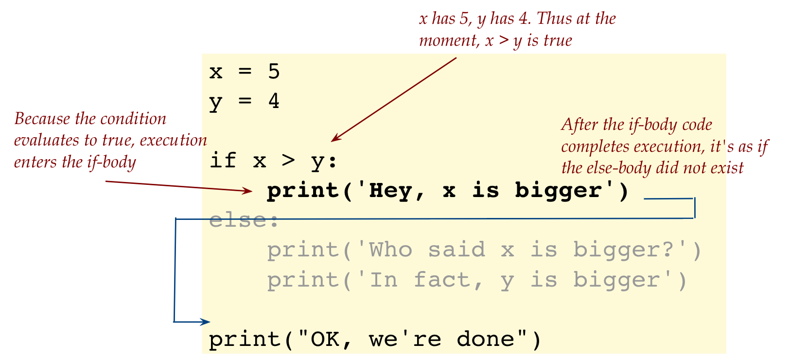
- And when y is larger than x: 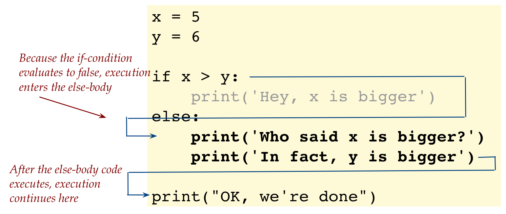
1.2 if-elif-else
Consider this variation:
x = 5
y = 5
if x > y:
print('Hey, x is bigger')
elif y > x:
print('Who said x is bigger?')
print('In fact, y is bigger')
else:
print('Actually, they are equal')
print("OK, we're done")Let’s explain:
- First, consider the case x=5, y=5: 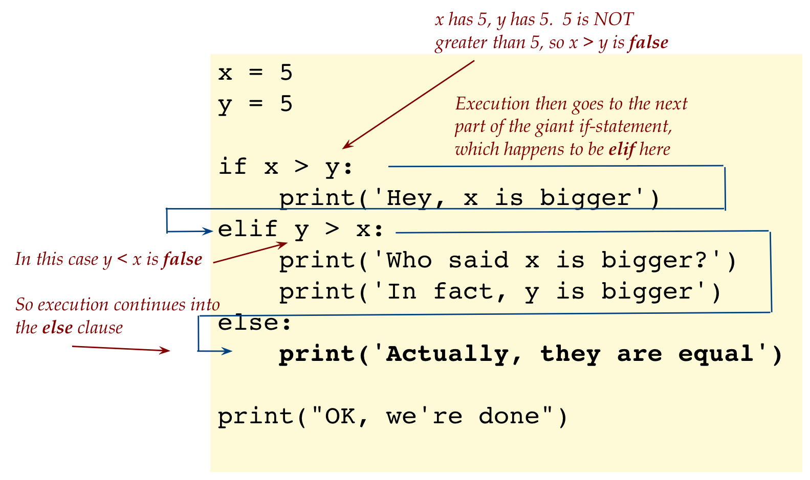
- Now consider x=5, y=4: 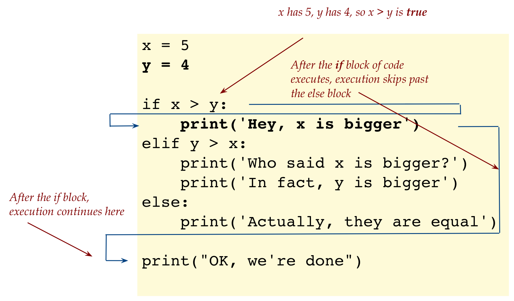
- Next: x=5, y=6: 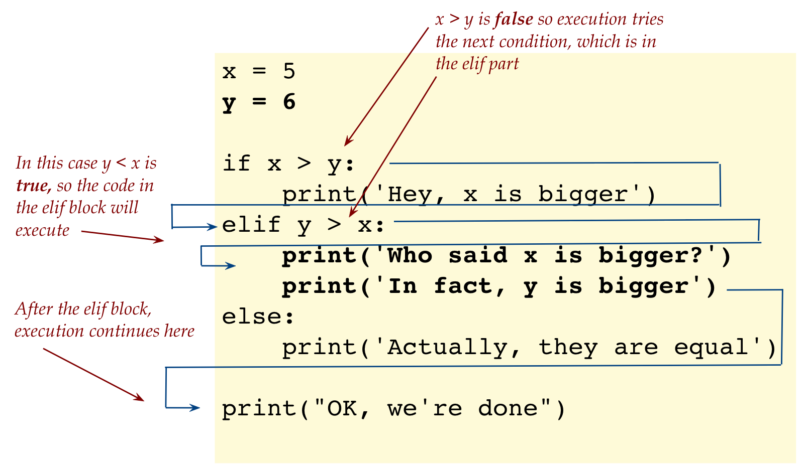
One can have as many elif sections as one would like, for example:
x = 3
if x == 1:
print('one')
elif x == 2:
print('two')
elif x == 3:
print('three')
elif x == 4:
print('four')
else:
print('big')Think of the whole thing as a giant if-statement: 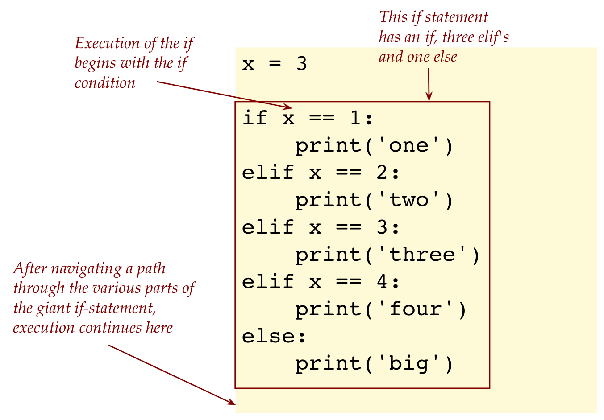 In the above case, when x is 3, the execution path through the giant if-statement is: 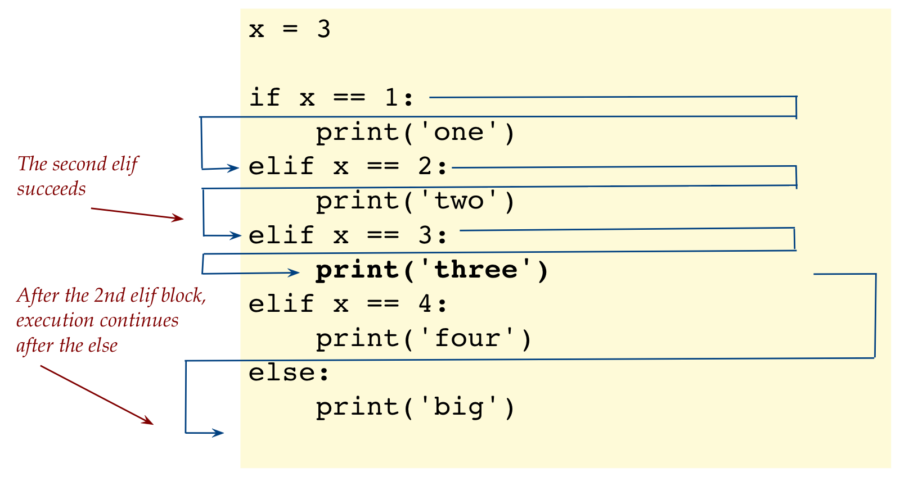
Consider this program:
x = 5
y = 4
z = 3
if x > y:
print('Hey, x is bigger')
if x > z:
print('x is bigger than z')
print('So, x must be the largest')1.7 Video
1.3 Nested conditionals
Consider this program:
a = 3
b = 4
c = 5
if a < b:
if a < c:
print('a is the smallest')
else:
print('a is not the smallest')
print('Done')This is an example of a nested conditional (nested if):
- First, examine the indented structure: 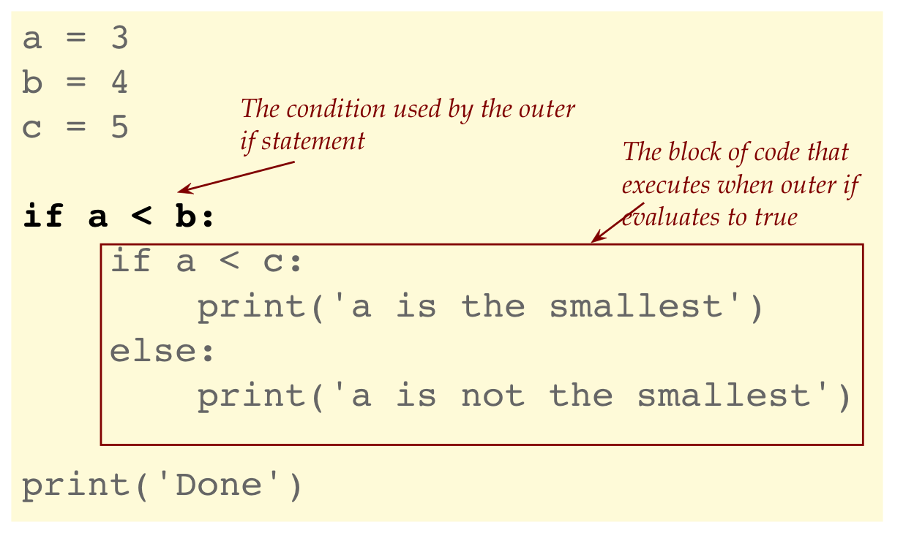
- The flow of execution: 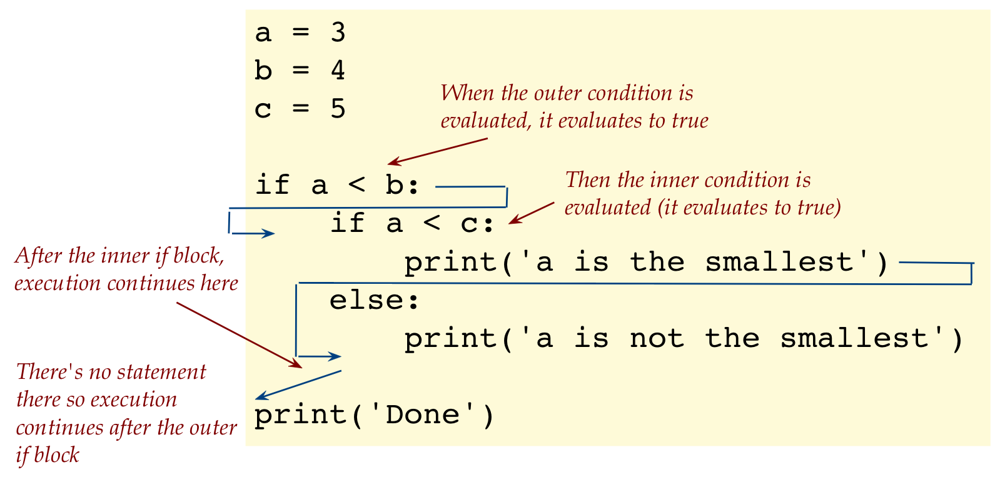
Consider this variation:
a = 3
b = 4
c = 5
if a < b:
if a < c:
print('a is the smallest')
else:
print('a is not the smallest')
print('We know a is less than b')
else:
print('We know a is not less than b')
print('Done')A numeric variable can be: strictly less, less than or equal to, strictly greater, greater than or equal to, or equal to another variable.
Accordingly, the different types of less/greater comparisons are:
a < b # Strictly less than, as when a=3, b=4 a <= b # Could be less (a=3, b=5), could be equal (a=3, b=3) a > b # Strictly greater (a=3, b=2) a >= b # Could be greater (a=3, b=1), could be equal (a=2, b=2)
1.4 Combining conditions
Consider this program:
x = 5
y = 5
z = 5
if x == y and y == z:
print('All three are equal')The first thing to point out is the
==operator:Because we’ve been using the equals operator for assigning values to variables, we need something else to test for equality.
The equality operator in Python is
==as in:if x == y and y == z:Alas, the problems with limited keyboard symbols!
Important: the difference between = and == is very important to remember. It’s easy to make a mistake one forget.
The if-statement combines two conditions:
if x == y and y == z:The combining occurs with the Boolean operator and:
if x == y and y == z:We can clarify the parts and combination thereof using parens:
if (x == y) and (y == z):The two parts are often called clauses:
First clause
(x == y):if (x == y) and (y == z):Second clause
(y == z):if (x == y) and (y == z):You could have many more clauses.
The “and” operator works like this: 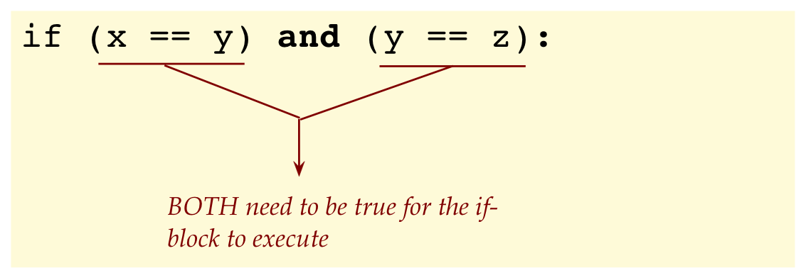
Boolean is pronounced “BOO lee unn”.
A Boolean operator takes expressions and computes to either true or false.
Let’s go back to finding the smallest of three numbers using conditionals:
a = 3
b = 4
c = 5
# Fill in code here ... 1.12 Video
As the counterpart to the and operator, there is the or operator:
a = -2.718
if (a <= 0) or (a >= 1):
print('a is not between 0 and 1')We have shown how to write “less than or equal to” using
=
So, now we can add “equals” and “not equals” to the numeric comparisons:
a < b # Strictly less than, like a=3 < b=4 a <= b # Could be less, could be equal (a=3, b=3) a > b # Strictly greater (a=3, b=2) a >= b # Could be greater, could be equal a == b # Exactly equal a != b # Not equalFor the or operator to evaluate to true, any one or both of the two expressions needs to be true.
Consider:
a = 3 b = 4 if (a < 10) or (b < 10): print('One or both of them is less than 10')- In this case both will evaluate to true, and so the print statement executes.
- Suppose we made a=3, b=11, the print statement will execute.
- Suppose we change a=11, b=3, the print statement will execute.
- But if a=11, b=12, the or fails (both clauses are false), and the print won’t execute.
Incidentally, let’s replace or with and in the above case, and see what we get:
a = 3 b = 4 if (a < 10) and (b < 10): print('Both of them are less than 10')In this case, both sub-conditions are satisfied, and so the whole if-condition is satisfied, which means the print will execute.
But if we had
a = 3 b = 4 if (a < 10) and (<b>b > 10</b>): print('Both of them are less than 10')In this case, the second comparison fails, and the print won’t occur.
Whereas if we had or:
a = 3 b = 4 if (a < 10) <b>or</b> (<b>b > 10</b>): print('One or both of them is less than 10')Here, it’s enough that a is less than 3, and so the print executes even though “b greater than 10” fails.
Next, let’s look at the NOT operator (written with !):
x = 5
y = 6
z = 7
if (x != y) and (x != z):
print('x is different from y and from z')Here, read != as “not equals”.
One can combine any number of and’s, for example:
x = 5
y = 6
z = 7
if (x != y) and (x != z) and (y != z):
print('x, y, z are all different')The difference between != and not
- We should read
!=as “not equals” just as we read==as “equals”. - There is another operator called not, which applies to Boolean expressions, as we’ll see next.
The not operator
One can apply the not operator to groups of clauses using additional parens:
x = 8 if not ( (x == 5) or (x == 6) ): print('x is neither 5 nor 6')Here, not is asking that whatever it applies to be false.
Thus, consider the expression
if not ((x == 5) or (x == 6)):In this case, x is 8. So, neither of
(x == 5)nor(x == 6)is true.Thus, the whole expression
( (x == 5) or (x ==6) )is false.Which means
not ( (x == 5) or (x ==6) )evaluates to true.Therefore, the print executes.
1.17 Video
1.5 Conditionals and loops
Let’s write a program to loop through integers and print only the even numbers:
n = 10
for i in range(1, n+1):
if i % 2 == 0:
print(i, 'is even')1.6 Conditionals and lists
Suppose we have a list of numbers, representing daily profits (sometimes negative, sometimes positive) and we only want to add up the positive numbers:
earnings = [-5, 2, 3, -9, 12, 4, -30]
total = 0
for k in earnings:
if k >= 0:
total += k
print('Total profit =', total)Next, let’s write a program that asks the user to enter a number that we then check is in a list of numbers:
# The list of numbers:
A = [-5, 2, 4, -9, 12, 13, -30]
# Receive what the user types in (as a string):
user_str = input('Enter an integer: ')
# Convert string to integer:
k = int(user_str)
# Check whether in the list:
if k in A:
print(k,'is in the list')
else:
print(k,'is not in the list')The in operator checks member in the list:
if k in A:1.7 More examples with lists
Consider the following program that aims to find duplicates in a list:
A = [2, 9, 2, 6, 4, 3, 3, 2]
for k in A:
if k in A:
print('Duplicate found:', k)In the list, we can see that 2 occurs thrice, and 3 occurs twice. Both should be listed as duplicates. Is this the case?
Now consider this variation:
A = [2, 9, 2, 6, 4, 3, 3, 2]
for i in range(len(A)-1):
for j in range(i+1, len(A)):
if A[i] == A[j]:
print('Duplicate found:', A[i])1.8 Some stats via programming
Let’s now apply our practice with conditionals to solve some problems in probability and statistics.
For example: Suppose I toss a coin 4 times and observe the face that’s up. What is the probability that I get all “tails” (not one toss shows “heads”).
Let’s do this in steps.
First, let’s write a program to toss a coin 4 times
import random
coin = ['heads', 'tails']
for i in range(4):
toss = random.choice(coin)
print(toss)We have made a list of strings:
coin = ['heads', 'tails']Python has a useful way to randomly select a member of a list:
toss = random.choice(coin)Alternatively, we could have written:
toss = random.choice(['heads','tails'])and avoided defining
coin.
Next, instead of printing the results, let’s count the number of heads observed:
import random
count = 0
for i in range(4):
toss = random.choice(['heads', 'tails'])
if toss == 'heads':
count = count + 1
print('Number of heads', count)Observe how the string that’s randomly selected from the list is compared against ‘heads’:
if toss == 'heads':
count = count + 1Next, what we need to do is repeat the 4-coin toss many times:
- Suppose we call 4-coin tosses a single trial.
- Clearly, if we ran a single trial and obtained 1 heads (count=1) then, could we conclude that the probability of getting all-4-tails is zero?
- What we need to do is run a large number of trials and record in how many trials we get a run of 4-tails.
- We’ll use the term “success” to identify a trial in which we get all-4-tails.
- Let’s examine the code:
import random
trials = 10
successes = 0
for i in range(trials):
# Count number of heads in 4 tosses:
count = 0
for i in range(4):
toss = random.choice(['heads', 'tails'])
if toss == 'heads':
count = count + 1
# If the count is zero, that's a success
if count == 0:
successes += 1
# Ratio of successes to trials:
probability = successes / trials
print('probability =', probability)Now let’s solve a problem with that other favorite manner of generating chance: dice
We’ll roll two dice and add the numbers face up. We want to ask: what are the chances we get 7 (when added up)?
Here’s the program:
import random
possible_outcomes = [1,2,3,4,5,6]
trials = 100000
successes = 0
for i in range(trials):
roll1 = random.choice(possible_outcomes)
roll2 = random.choice(possible_outcomes)
if roll1 + roll2 == 7:
successes += 1
probability = successes / trials
print('probability =', probability)Let’s also look at how one can get Python to randomly generate real numbers, for example:
import random
trials = 100
total = 0
for i in range(trials):
x = random.uniform(5, 10)
print(x)
total += x
print('mean =', total/trials)By using
x = random.uniform(5, 10)we can generate a random real number between 5 and 10.
In the above program we are generating many such numbers and calculating their average.
Before you head off to Vegas with your Python programs, let’s point out:
- You can use programming to explore ideas in probability and statistics, and solve real problems as well.
- It is an exciting way to learn stats that we will have more to say about later.
1.9 Algorithmic art
Let’s now use what we’ve learned to explore the notion of how computers can be programmed to generate abstract art.
In our first example, we’ll draw lines from one border of a square to another: 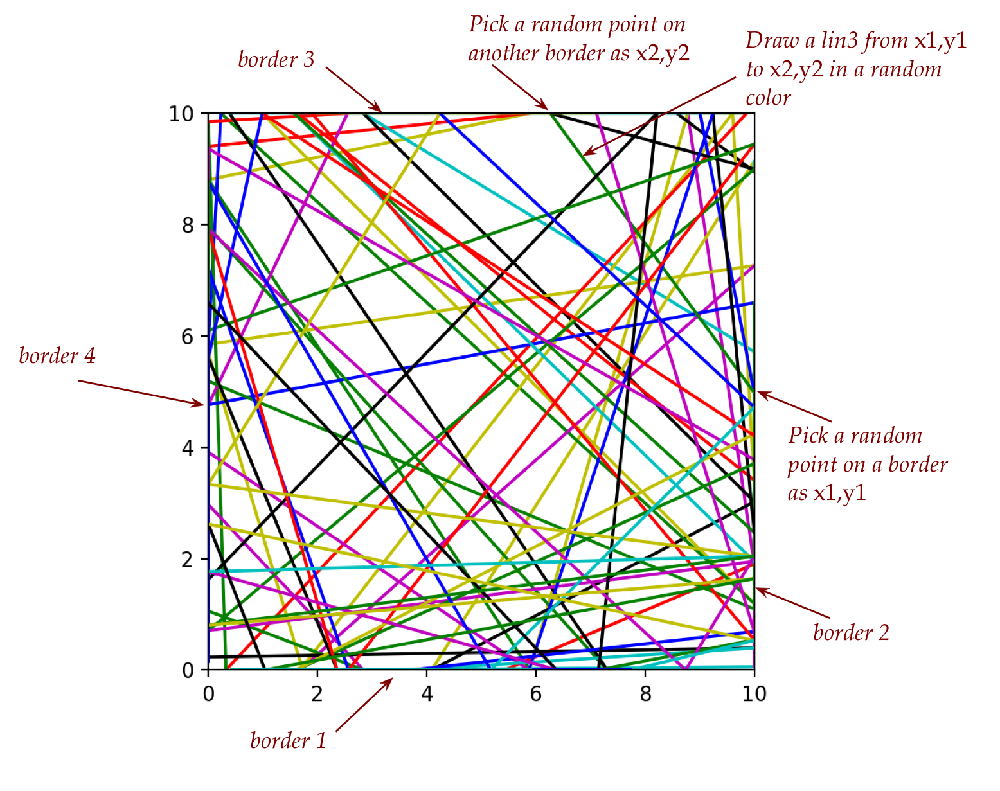
Let’s describe the main idea via some pseudocode:
In a loop we’ll generate:
Set up an initial x1,y1 and x2,y2 for i in ... Pick a random color Draw a line from x1,y1, y2,y2 Make the current endpoint the start of the next line: x1 = x2 y1 = y2 Pick a random border Now pick a new random point on the next borderWhen we pick a border, we’ll need to figure out the coordinates.
Next, we’ll explore an interesting question:
- Think of random art at one end of a spectrum.
- And highly-structured geometry at the other end, generated by an algorithm.
- The question: can we adjust a “knob” that let’s us generate a mix? And is that more aesthetic?
1.10 When things go wrong
In each of the exercises below, first try to identify the error just by reading. Then type up the program to confirm, and after that, fix the error.